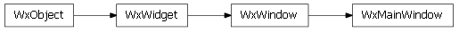

MainWindow¶
- class enaml.widgets.main_window.MainWindow(parent=None, **kwargs)[source]¶
Bases: enaml.widgets.window.Window
A top level main window widget.
MainWindow widgets are top level widgets which provide additional functionality beyond frame decoration. A MainWindow may optionally contain a MenuBar, any number of ToolBars, a StatusBar, and any number of DockPanes. Like Window, a MainWindow can have at most one central Container widget, which will be expanded to fit into the available space.
A read only property which returns the window’s MenuBar.
- tool_bars = None¶
A read only property which returns the window’s ToolBars.
- dock_panes = None¶
A read only property which returns the window’s DockPanes.
- __implements__¶
alias of __NoInterface__
Backends¶
Qt¶

- class enaml.qt.qt_main_window.QtMainWindow(object_id, parent, session)[source]¶
Bases: enaml.qt.qt_window.QtWindow
A Qt implementation of an Enaml MainWindow.
Wx¶

- class enaml.wx.wx_main_window.WxMainWindow(object_id, parent, session)[source]¶
Bases: enaml.wx.wx_window.WxWindow
A Wx implementation of an Enaml MainWindow.